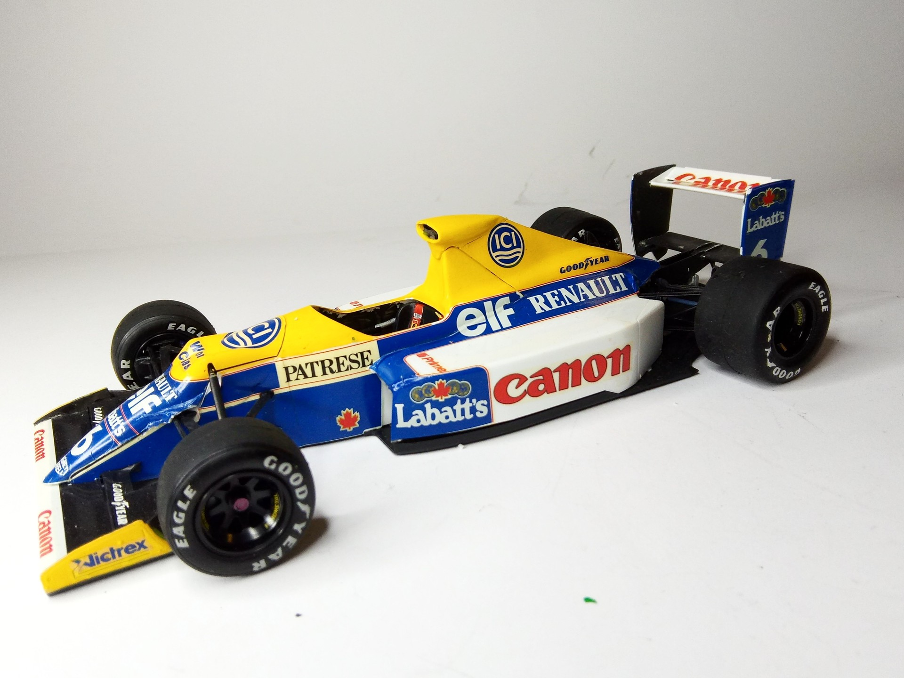
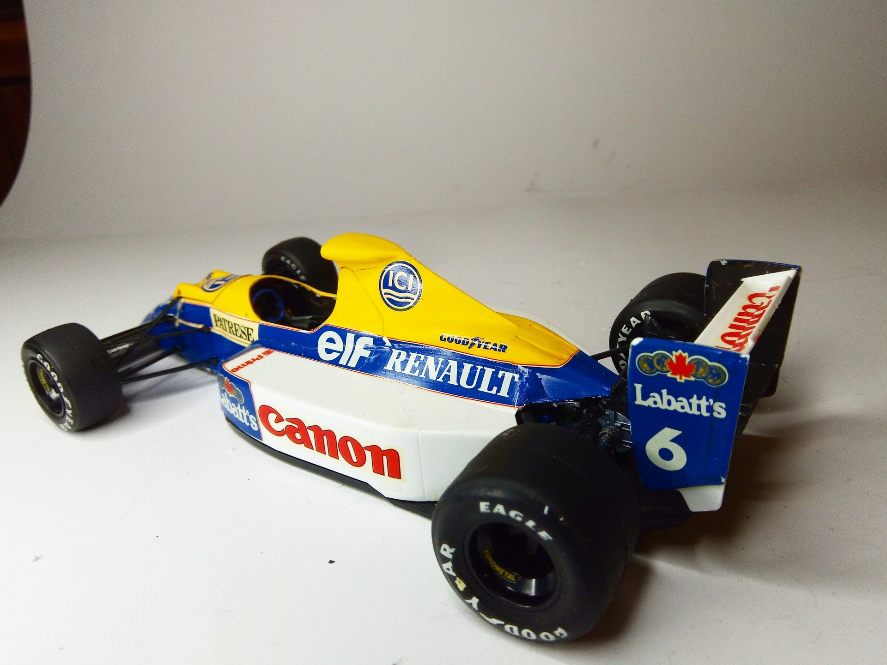

Auto e veicoli stradali · scale model archive
Williams FW-13B
Williams FW-13B — Kit: Tamiya, Scale: 1/20. As raced by Riccardo Patrese in 1990 in F1 World Championship #1/20 #Tamiya #FW13B #Williams

Photo gallery

English description
As raced by Riccardo Patrese in 1990 in F1 World Championship
#1/20 #Tamiya #FW13B #Williams
Descrizione italiana
Come corse Riccardo Patrese nel Campionato del Mondo di Formula 1 1990.